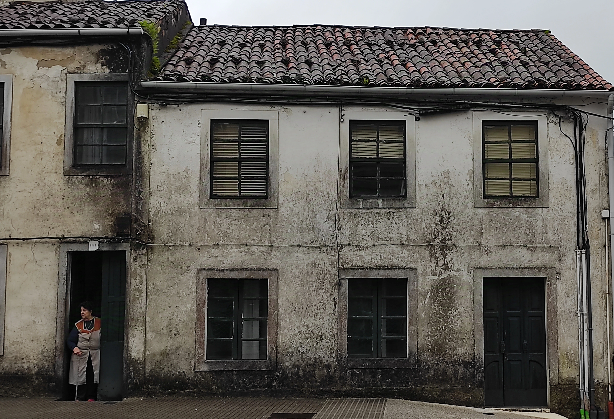

Galicia is a region on the Atlantic with a clear identity, a great cuisine and a pretty strong celtic influence. Pulpo is definitely the national dish, cooked in various different ways. I consider Pulpo alla gallega my favourite dish, a simple boiled octopus with a bit of paprika on top and boiled potatoes as a side dish. Just simple as that!
People in Galicia are generally pretty rough, social and talkative. During the week I spent there, I would say I generally connected well with the locals and also felt quite welcomed but maybe if a smile is what you're looking for, it is better to go somewhere else. Somehow galicians remind me of people of Berlin, the city where I currently live. I guess the weather plays a role on people attitude, therefore rough weather equal rough people.
Since most of the caminos are ending in Santiago, the beautiful medievil city is full of pilgrim for most of the year. Once people reach Santiago, no matter which way they are coming from, it is common to see them celebrating the achievement of the long pilgrimage, and that makes quite common to see people jumping, hugging each other or screaming of joy which is something that I would say generally is not common to see in other places.
After that, for those who has time left and are still willing to walk other 90 km, the beautiful cape town of Finisterre is waiting for those who needs an extra treat. The name of the town comes from the latin "finis terrae", cause the romans believed the town to be the end of the world (the good old time). By the time we were there during our last day together, we had the chance to admire an apocalyptical sunset covered by clouds that spread the sunlight all over the sky, leaving us once again with eyes wide open.
Last but not least I have to mention a few beautiful coastal towns, where I had the chance to spend only little time, maximum one evening or sometimes I only stopped for a quick lunch (pulpo of course), but that time left in my mind pictures of one of the corner of Europe that from now on I am probably gonna carry in my heart for long. I stopped in A Guardia and had seafood on a place in a corner on the main street in front of the ocean, a place full of locals drinking beer and enjoying various kind of seafood for lunch. The town would fit perfectly on a postcard, with its beautiful colorful houses facing the Atlantic. A few days after I stayed in a place called Caldas de Reis: a thermal town where apparently kings used to go to take some time off. The town is beautiful and very welcoming and there is a chance to dip your feet in a thermal public fountain, perfect for all of those who look for a little rest on the camino.